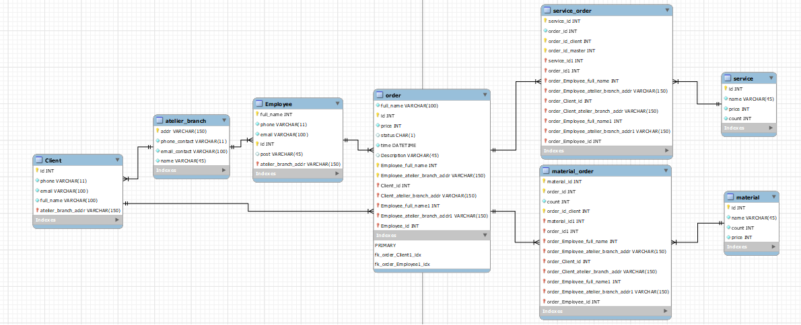

Лабораторная работа #1
Client
Описывает клиента который обращается к ателье за их услугами. Клиент имеет две связи, с ателье так как он обращается туда и с заказом, так как нужен его ID. Связь с ателье была определена как «Многие для одного»;, так как клиентов может быть много, но филиал один. С заказом связь «Один для многих», так как заказов у одного клиентов может быть много, но клиент один.
Atelier_branch
В моей вселенной данное ателье является корпорацией и эта база данных предназначена конкретно для филиала В этой сущности есть типичные поля, адрес, телефон, e-mail, название, всё на что хватило фантазии. Таблица имеет связь «Один для многих» с таблицей работники, так как работников много, ателье одно.
Employee
Сущность описывает работника, его данные и уникальный идентификационный номер. Используется связь «Один для многих», так как работник один, а заказов у него может быть несколько.
Order
Таблица в которую заносятся все данные о заказе, заказчик, исполнитель, время, статус заказа и т.д. Имеет две связи типа, «Один для многих»,заказ один, а материалов и услуг внутри заказа может быть несколько.
service_order
Содержит в себе данные об услугах внутри заказа. Использует единственную связь с service «Многие для одного», услуг внутри заказов может быть несколько, но сама услуга одна.
material_order
Содержит данные о материалах которые будут использованы внутри заказа. «Многие для одного» та же история, что и с услугами.
service
Информация о конкретной услуге.
material
Информация о конкретном материале.